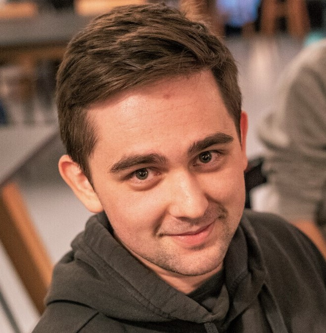

Greetings! They call me Timo and I'm half romanian and half dutch, born and raised in the mystical region of Transylvania. I moved to the Netherlands when I became 19 and started studying at the Delft University of Technology in 2016.
I like to believe that I have an academic mindset, a versatile skill-set and a broad knowledge on the field of Computer Science. I have a specialization in Embedded and Networked Systems, but I could fill many roles within the IT industry:
full-stack developer, embedded systems engineer, data engineer, network engineer, etc.
In terms of personality, I have a structured and result-oriented approach to work. Nevertheless, I care about the details and I spend a fair share of time perfecting the non-functional aspects of what I am working on. Having worked together with many different types of people, I have become an effective communicator and a little less stubborn (I'm still working on it).
In terms of personality, I have a structured and result-oriented approach to work. Nevertheless, I care about the details and I spend a fair share of time perfecting the non-functional aspects of what I am working on. Having worked together with many different types of people, I have become an effective communicator and a little less stubborn (I'm still working on it).